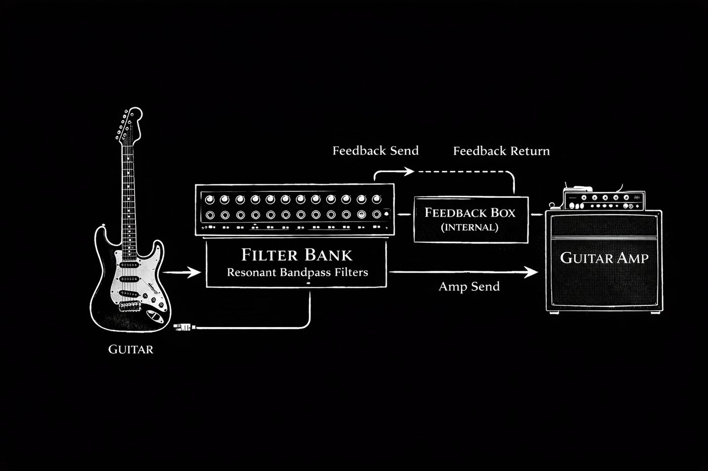
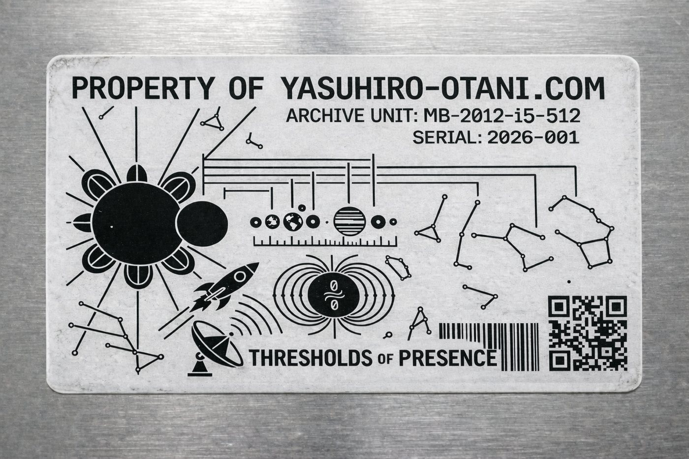
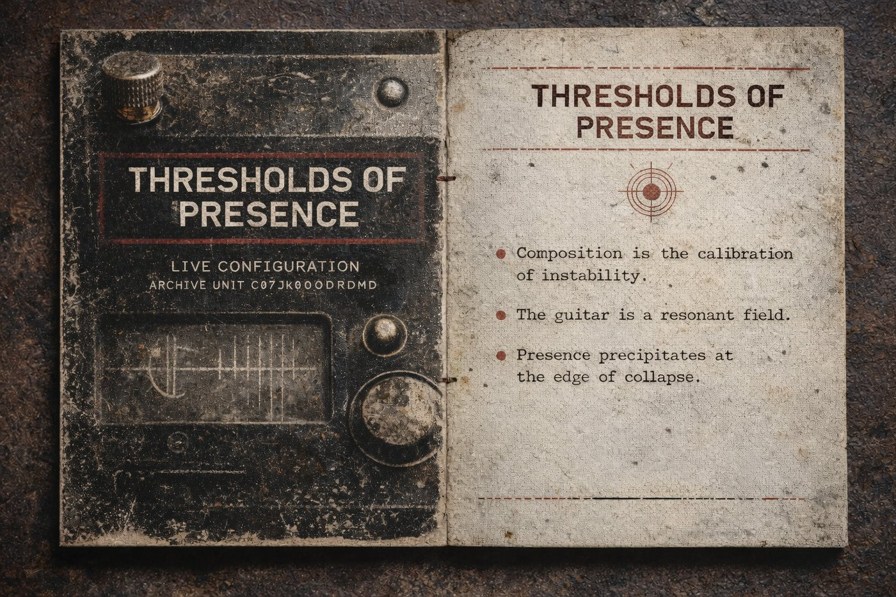

Live Configuration / Available for Booking
Saturation is harmony — overtone masses migrate through noise. A single-take live configuration built from internal feedback and nonlinear harmonic behavior. Solo live composition and performance — no playback.
Thresholds of Presence — Live Configuration (single take)
System
A closed acoustic system sustained in a meta-stable state between resonance and collapse.
Internal feedback recursion. Nonlinear amplification (disproportionate response). Vertical harmonic density (no progression). Static counterpoint (fragment coexistence, no resolution).
Electric guitar. Sherman Filterbank 2. No backing tracks, no playback material.
Solo performance. Output: stereo line preferred, or amplifier-based. Needs: 2 DI or stereo input, small table, stable power. Footprint: minimal.
Diagram

Electric guitar → Sherman Filterbank 2 → internal feedback → stereo output.
Description
The guitar is treated as a resonant field rather than a linear signal source. Overtones are amplified until the fundamental destabilizes. Harmony does not move forward; it accumulates vertically. The performer calibrates instability and sustains a meta-stable threshold where structure approaches collapse without dissolving.
Spatial Behavior
Room resonance shifts the instability threshold. Each venue recalibrates the feedback field and yields a structurally distinct outcome. The work adapts to architecture rather than reproducing a fixed piece.
Workshop possible on request: internal feedback techniques and vertical harmonic density.
Visual Materials

10×5 cm physical label used in the promo kit.
Closed feedback structure — conceptual device render.

Vertical density / threshold diagram / fragment notation.
Composition is the calibration of instability.
The guitar is a resonant field.
Presence precipitates at the edge of collapse.
Booking
Available for booking — festivals, concert series, and gallery/installation contexts. Get in touch via the contact form with venue, dates, and technical context.
Contact form →